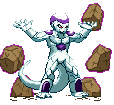

activate Sadism Mode (LV2)
Activating Sadism Mode makes Freeza a bit more dangerous and ferocious!
- Upon activation you will see an empty Sadism Bar (divided into 3 sections for LV1, LV2 and LV3) and a red kanji added to the screen.
- Freeza gains access to the Dash Teleports, Telekinetic Rock Throw and Death Charge (detailed below).
- Tail Press Nightmare costs LV2 instead of LV3 and also cancels the mode.
- Depending on how far the Sadism Bar is filled when you activate the Tail Press Nightmare, Freeza will perform a Finisher at the end of it:
LV1 - Telekinesis Attack.
LV2 - Great Energy Cut.
LV3 - Super Nova.
- Upon activation you will see an empty Sadism Bar (divided into 3 sections for LV1, LV2 and LV3) and a red kanji added to the screen.
- Freeza gains access to the Dash Teleports, Telekinetic Rock Throw and Death Charge (detailed below).
- Tail Press Nightmare costs LV2 instead of LV3 and also cancels the mode.
- Depending on how far the Sadism Bar is filled when you activate the Tail Press Nightmare, Freeza will perform a Finisher at the end of it:
LV1 - Telekinesis Attack.
LV2 - Great Energy Cut.
LV3 - Super Nova.


Dash Teleport
During Sadism Mode, Freeza's (ground) back dash will become a short-range teleport.
When he's close enough to the opponent, when performing the Forward version, Freeza will quickly switch side of them.
Since it has the dash command, you can chain these off the Focus Attack.



Telekinetic Rock Throw
Freeza shows off, levitating a group of rocks around him as a shield.
When the opponent comes into contact with one of these rocks, it does absolutely minute damage but counts as a genuine hit with hitstun.
If you want to bombard the opponent with these rocks from afar, you can.
Pressing the LP button at any time or situation will send one of the rocks flying forward slowly.
Pressing forward+LP does the same but the rock flies forward faster.
Inputting the QCF+K command once more with at least one rock still present makes you fire ALL remaining rocks forward, fast.
LK fires them straight forward, MK diagonally upwards and SK vertially up.
All of these rock throwing moves can be performed while in the air as well.
Note that the rocks hitting the opponent drain your Sadism bar.
Once you've ran out of rocks, you can perform the activation command again and start over.


Death Charge
A stronger version of the Head Charge based off Freeza's Desperation Move in DBZ Hyper Dimension.
He charges forward with his arms in front, surrounded by energy. It takes its power from the Sadism Bar, so the more that Bar
is filled, the more damaging the move will become.